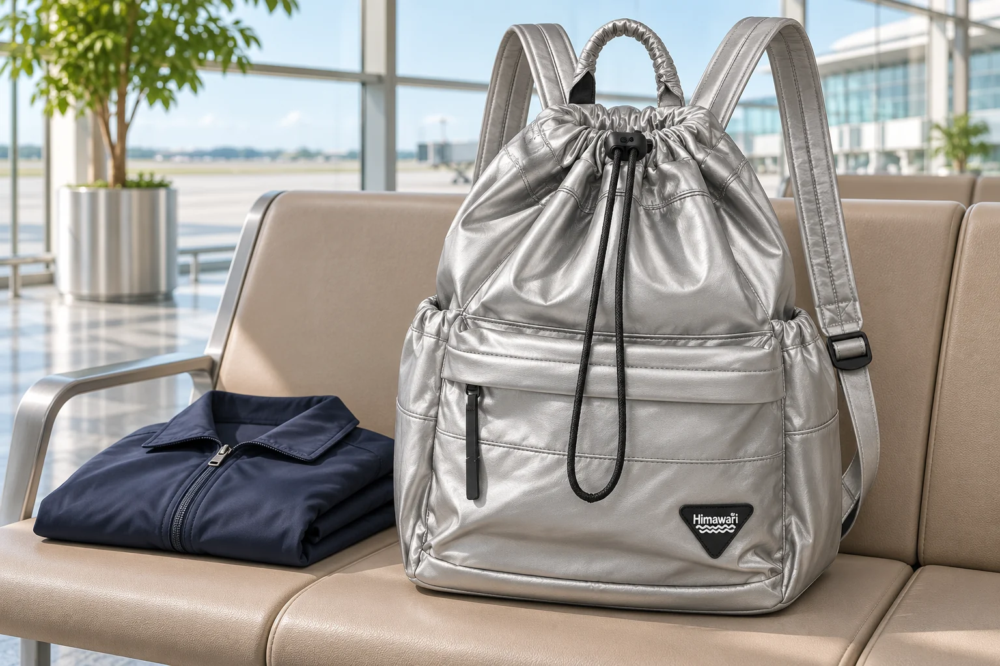
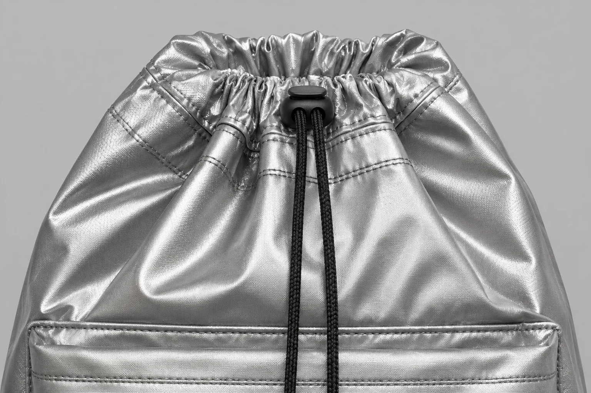

기내용 백팩과 개인 소지품, 같은 크기 기준일까

캐리어 하나와 백팩 하나를 들고 비행기를 탈 계획이라면 백팩에 적용할 크기부터 정해야 합니다. 기내에 가져가는 물건이라는 이유로 두 가방에 같은 기준을 대입하면 비교가 어긋납니다. 항공사가 휴대용 가방과 개인 소지품을 구분해 안내할 때에는 백팩을 어느 항목으로 가져갈지에 따라 읽을 숫자가 달라집니다. 상품명에 적힌 기내용이나 미니라는 말만으로 그 항목이 정해지지는 않습니다.
캐리어 없이 백팩만 가져갈 때와 캐리어에 백팩을 더할 때도 질문이 달라집니다. 같은 백팩을 골라도 자신이 이미 가져가는 가방이 무엇인지 알아야 개수와 크기를 함께 읽을 수 있습니다. 여행 기간이나 짐 목록을 정하기 전에, 예약한 항공편의 안내에서 두 가방이 각각 어느 자리를 차지하는지 살펴봅니다.
한 항공사의 안내에도 두 크기가 있습니다
2026년 11월 3일 확인한 대한항공 휴대 수하물 안내는 일반석에서 휴대용 가방 1개와 개인 소지품 1개를 합계 10kg 이내로 안내합니다. 휴대용 가방은 세 변의 합 115cm 이내 또는 각 변 55 × 40 × 20cm 이내이며 손잡이와 바퀴를 포함합니다. 개인 소지품의 크기는 40 × 30 × 15cm 이내이고 앞좌석 아래에 보관합니다. 두 항목을 같은 칸에 옮겨 적으면 작은 가방에 적용할 조건을 놓치게 됩니다.
이 안내를 읽는 상황이라면 캐리어를 휴대용 가방으로 생각하면서 백팩에도 같은 크기를 다시 대입하지 않도록 봅니다. 개인 소지품으로 가져갈 백팩을 찾는 사람은 그 항목의 치수를 비교해야 합니다. 백팩이라는 형태와 개인 소지품이라는 구분은 서로 다른 정보입니다. 백팩 사진 옆에 기내용이라는 설명이 있어도 어느 항목에 맞춘 표현인지 알아야 구매할 크기를 좁힐 수 있습니다.
27과 36을 어느 방향에 놓을까요
비교 대상으로 No.0514 실버미니 제품 정보를 펼쳐봅니다. 외부 크기는 가로 27 × 세로 36 × 폭 14cm, 무게는 350g입니다. 겉감은 나일론, 안감은 폴리에스터로 표기되어 있습니다. 치수의 근거는 2026-09-14 제조사 카탈로그 18페이지의 0514S이며 생산 시기와 측정 방식에 따라 차이가 있을 수 있다는 안내가 붙습니다.
같은 No.0514의 실버 옵션은 외부 크기가 30 × 43 × 15cm로 안내되어 있습니다. 상품명에 비슷한 단어가 나와도 이 글에서 보는 실버미니와 치수를 섞을 수 없습니다. 판매 항목을 열었을 때 색상 이름 끝의 미니와 연결된 사양을 확인해야 합니다. 다른 크기의 사진이나 숫자를 가져오면 뒤의 비교도 달라집니다.
실버미니의 세 숫자를 긴 방향부터 다시 적으면 36 × 27 × 14cm입니다. 이를 앞서 본 개인 소지품의 40 × 30 × 15cm 옆에 놓아야 방향을 맞춰 읽을 수 있습니다. 카탈로그 수치끼리 비교하면 각각 4cm, 3cm, 1cm 차이가 납니다. 세 값 가운데 남는 차이가 가장 작은 방향은 앞뒤 폭입니다. 가로 27을 무조건 첫 번째 숫자 40에 맞추는 식으로 순서만 따라가면 어느 방향의 여유를 보고 있는지 헷갈립니다.
이 차이는 표시된 수치 사이의 계산입니다. 짐을 넣은 실물의 여유나 특정 좌석 아래의 남는 공간을 재어 얻은 값은 아닙니다. 1cm가 남는다고 적기 전에 무엇과 무엇을 뺀 결과인지 함께 읽어야 합니다. 가방의 소재 이름이나 350g이라는 중량도 짐을 담은 뒤의 앞뒤 크기까지 알려주지는 않습니다.
세 변을 더한 값이 같아도 두께는 다릅니다
여기서 판매 제품과 관계없는 가상의 가방을 하나 생각해봅니다. 짐을 담은 뒤 긴 방향 37cm, 짧은 방향 30cm, 두께 18cm로 잰 가방입니다. 세 값을 더하면 85cm입니다. 40과 30과 15를 더한 값도 85이므로 합계만 메모하면 같은 크기처럼 보입니다. 하지만 이 예시 가방의 두께는 18cm로, 비교 중인 개인 소지품 두께 15cm를 넘습니다. 합이 같다는 계산으로 각 변의 조건을 대신할 수 없습니다.
이 가방은 No.0514를 측정한 사례가 아닙니다. 세 변의 합과 각 방향의 한도가 왜 다른 질문인지 설명하려고 만든 예입니다. 긴 쪽에서 줄인 길이를 두께 쪽에 더할 수 있다고 생각하면 얇고 긴 모양과 짧고 두꺼운 모양이 같은 조건으로 묶입니다. 놓일 공간의 모양을 비교하려면 어느 방향이 두꺼워졌는지가 남아 있어야 합니다.
리터 용량도 이 비교를 대신하지 못합니다. 가방이 담을 수 있는 양을 알고 있어도 실제 바깥 두께가 얼마인지는 따로 재야 합니다. 같은 양의 물건을 담더라도 납작한 묶음과 단단한 상자는 다른 외곽을 만듭니다. 용량이 작다는 표현만 듣고 개인 소지품 항목에 넣기보다, 자신이 운반할 상태의 세 방향을 확인할 이유가 생깁니다.
출발할 모습으로 닫은 뒤 바깥을 봅니다
상품의 폭을 비교한 뒤에는 실제로 가져갈 물건을 넣고 평소처럼 닫은 가방을 봅니다. 빈 가방에서 납작했던 앞주머니가 앞으로 나왔는지, 윗입구 위로 물건이 올라왔는지 살펴봅니다. 가방이 부드러워도 안에 든 단단한 케이스까지 같은 모양으로 접히지는 않습니다. 손으로 누르고 있는 동안만 줄어드는 두께를 출발할 가방의 치수로 적으면 손을 뗀 뒤의 모습을 빠뜨립니다.
집에서 비교 메모를 남길 때에는 둥근 표면을 따라 줄자를 감은 둘레와 가방의 앞뒤 거리를 구분합니다. 가방 양쪽에 책처럼 평평한 물건을 가볍게 대면 어디가 가장 바깥으로 나오는지 살피는 데 도움이 됩니다. 천을 눌러 좁히지 않은 상태로 보고 앞포켓이나 손잡이가 나온 위치도 놓치지 않습니다. 이 방법은 자기 가방의 외곽을 파악하기 위한 보조 방법이며 항공사의 공식 측정 절차를 대신하지 않습니다.

측정값 옆에는 무엇을 넣었는지 짧게 남겨두면 좋습니다. 같은 백팩에 얇은 옷을 담은 날과 단단한 기기를 더한 날은 가장 바깥으로 나온 부분이 달라질 수 있습니다. 짐을 옮겨 담은 뒤에는 전에 적은 숫자를 그대로 쓰지 않고 달라진 방향을 다시 봅니다. 이렇게 남긴 값은 카탈로그의 외부 크기와 구별해 실제 사용 상태를 설명할 자료가 됩니다.
마지막 비교는 예약한 항공편으로 돌아옵니다
대한항공의 안내 한 가지를 다른 항공사에 그대로 적용할 수는 없습니다. 해당 안내도 공동운항편은 실제 운항사의 규정이 다를 수 있다고 알립니다. 항공권에서 실제 운항사를 확인한 뒤 그 항공편의 현재 안내를 읽어야 합니다. 가방 판매처에는 선택한 옵션의 사양과 측정 범위를, 항공사에는 실제 이용편에 적용할 반입 조건을 확인하는 식으로 문의 대상을 구별할 수 있습니다.
문의할 때 백팩 모델명만 전하기보다 함께 가져갈 캐리어가 있는지, 백팩을 어느 항목으로 가져가려는지와 짐을 담은 치수를 적으면 상황을 설명하기 쉽습니다. 확인받은 내용이 이번 항공편의 어떤 조건에 관한 답인지도 남깁니다. 다른 여행에서 들고 탔다는 경험이나 제품 사진에서 작아 보인다는 인상만으로 이번 반입까지 확정할 수는 없습니다.
No.0514 실버미니의 27 × 36 × 14cm는 후보를 비교할 출발점입니다. 다음에 확인할 값은 자기 짐을 담고 닫은 가방의 바깥 크기입니다. 그 값을 예약한 항공편의 개인 소지품 또는 휴대용 가방 항목에 맞춰 읽으면, 작아 보이는 백팩을 찾던 질문이 이번에 가져갈 가방의 조건으로 구체화됩니다.